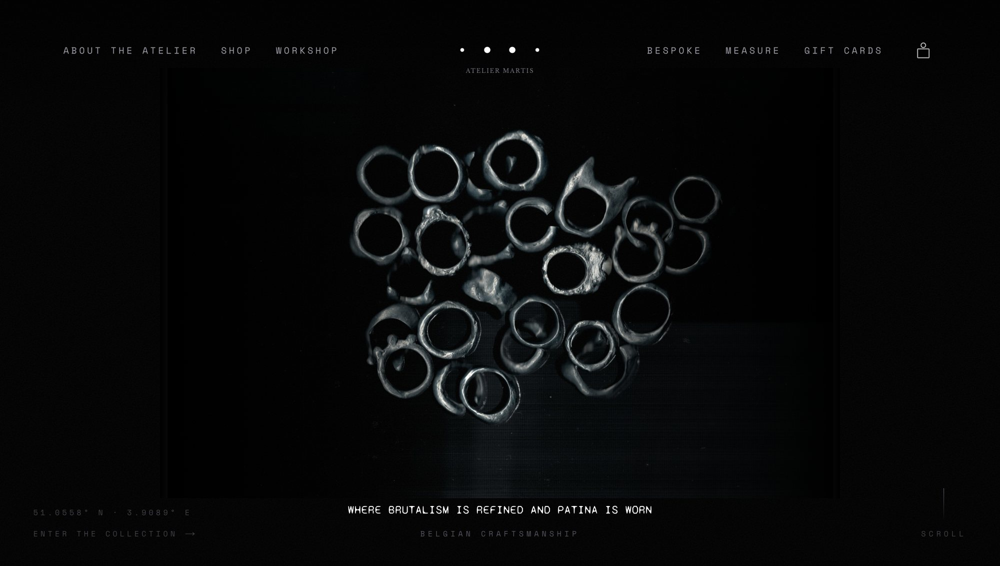
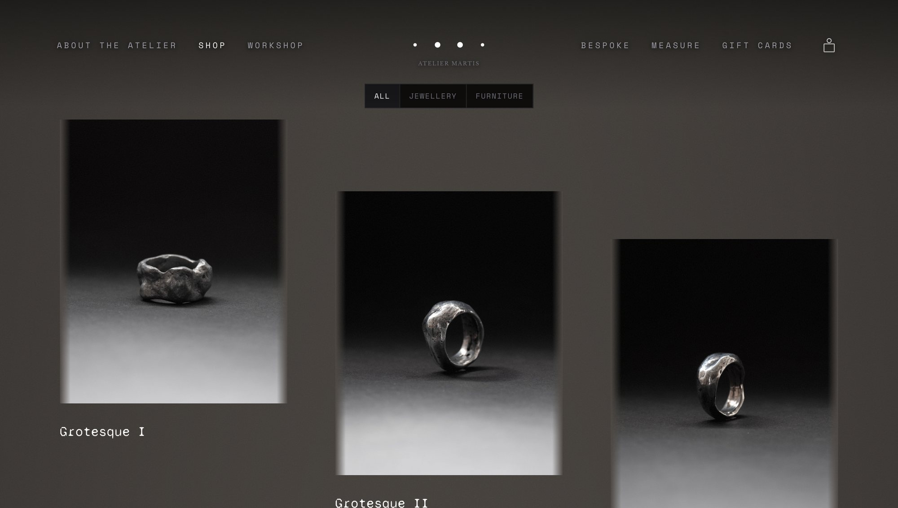
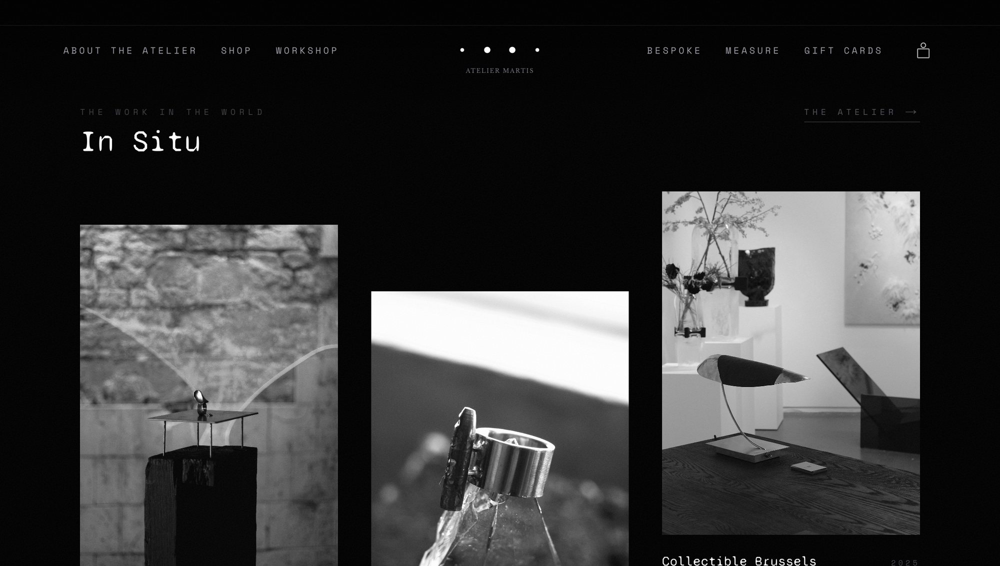
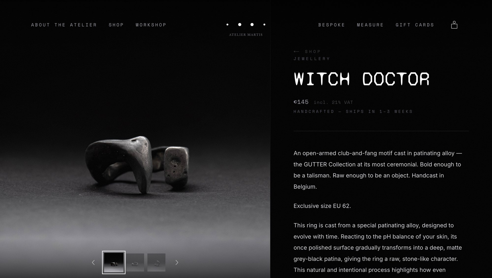
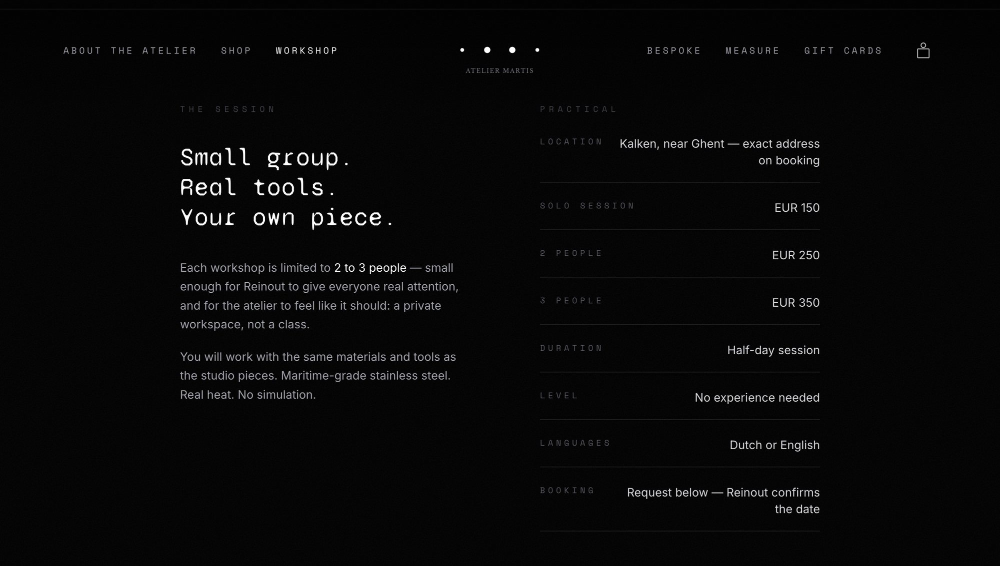

Reinout Van der Straeten makes jewellery and furniture by hand, near Ghent. He needed a home for it that felt like the work itself: quiet, considered, a little brutal.
I designed and built everything, from the first layout to the checkout. A shop with online payments, gift cards, workshop bookings, made-to-order requests, and a back office the studio runs on its own. Nothing decorative. A site that lets the work breathe.




